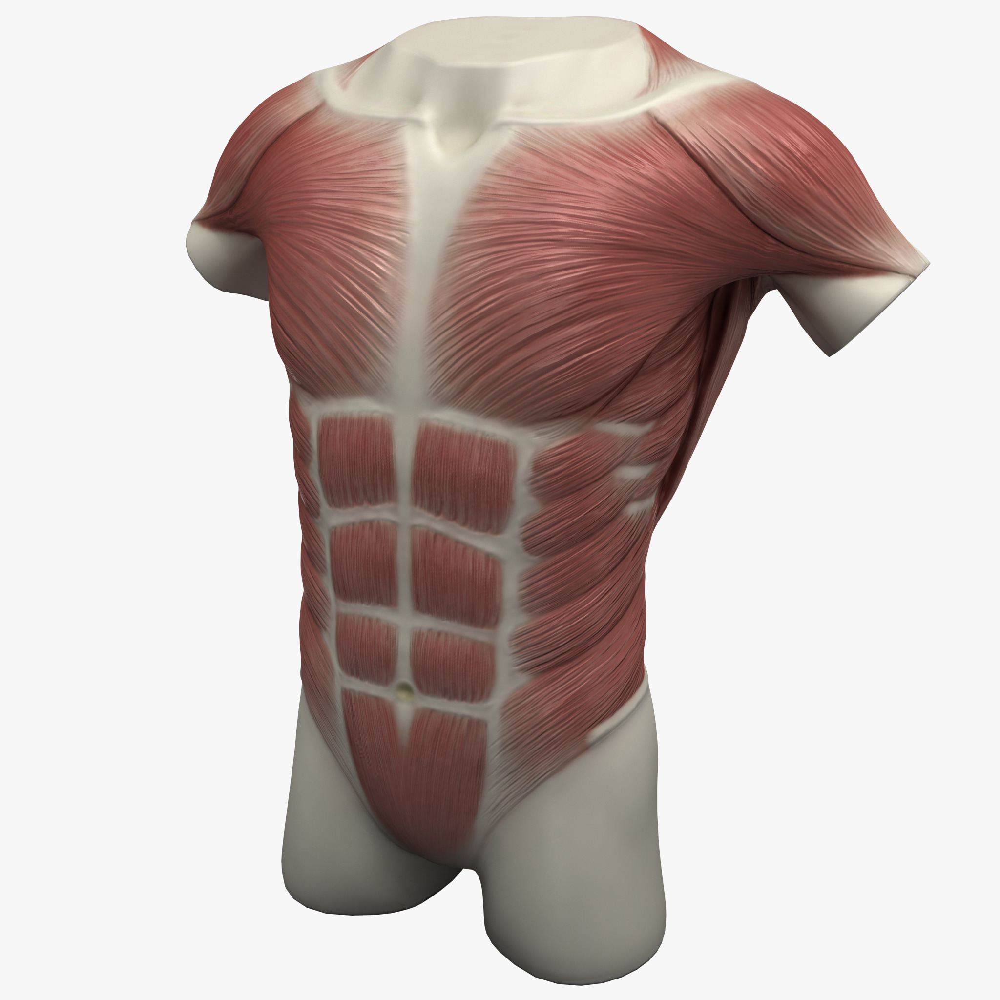
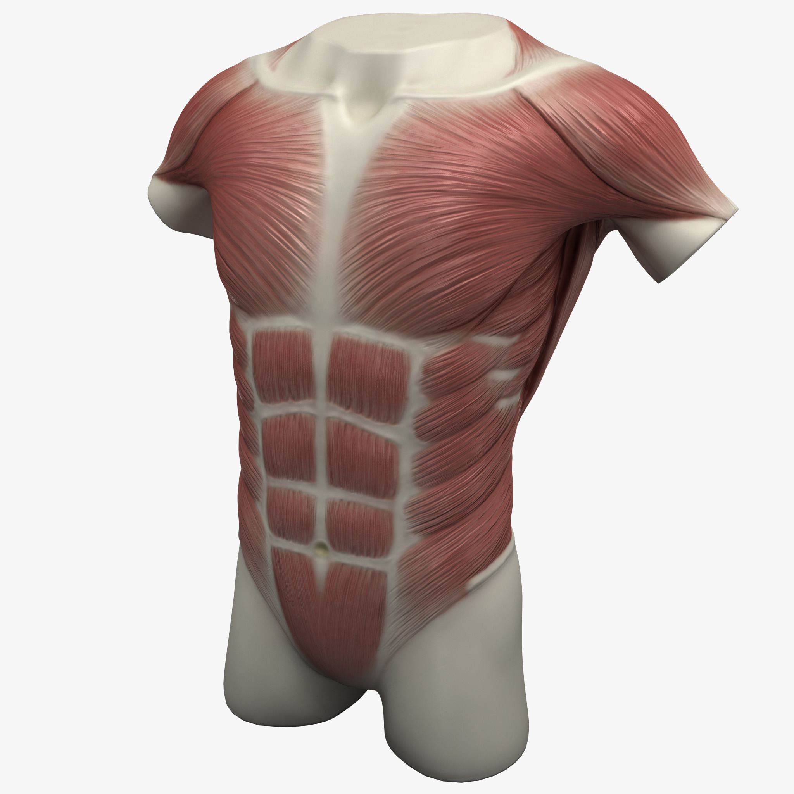

El torso alberga el corazón, los pulmones, el estómago y otros órganos vitales. Es fundamental para la respiración y la circulación sanguínea.
Volver al mapa
El torso alberga el corazón, los pulmones, el estómago y otros órganos vitales. Es fundamental para la respiración y la circulación sanguínea.
